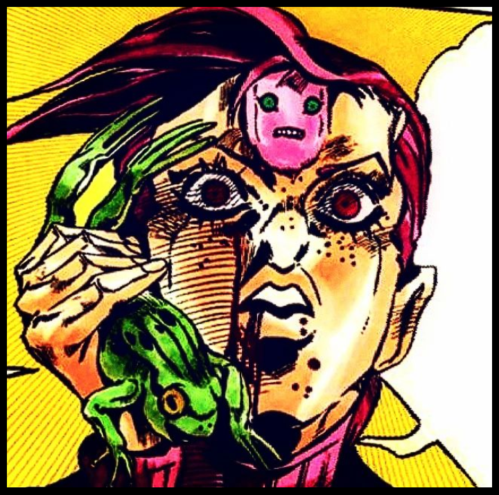

Computer Science Student

I’m a high school senior in France, currently specializing in Computer Science (NSI). Passionate about technology, I’m especially interested in software engineering, algorithms and bulding application using languages like Python, HTML, CSS, and JavaScript. Outside of programming, I'm interrested in biology—particularly genetics and DNA, also in robotics, such as NASA’s Perseverance rover and quadruped robots. After graduation, I plan to pursue an engineering degree.
gabrielfaimali@gmail.com
Paris, France